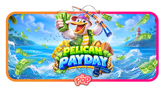

Pelican Payday - RTP, Review & Where to Play

Official game art: Pragmatic Play.
| Provider | Pragmatic Play |
|---|---|
| Released | 6 October 2026 |
| Layout | 3 reels x 5 rows, 10 fixed paylines |
| RTP | 96.59% (also 95.61% / 94.59%) |
| Volatility | Low |
| Max win | x5,000 |
| Hit rate | 32.47% |
| Free Spins rate | 1 in 146 spins (approx) |
| Stakes | $0.10 - $250 |
| Mobile | Yes |
Overview
Pelican Payday is Pragmatic Play's sunny take on the hold-and-collect formula. A cheerful pelican with an eye for cash stands beside a compact 3x5 grid set against a bright seaside backdrop, complete with tackle boxes, lifebuoys and card royals.
The game keeps things simple: 10 fixed paylines pay left to right, and the real action comes from Money symbols. These can land on any reel carrying cash values from 0.5x to 10x the bet, or one of four fixed jackpots: Mini (20x), Minor (50x), Major (100x) and Grand (1,000x).
Money symbols only pay when a Collect symbol shows up. In the base game the pelican lands exclusively on reel 3, so timing is everything. Free Spins change the rules completely with a persistent prize pot that can be paid out again and again.
How the mechanics work
Money symbols + Collect (base game). Money symbols land on any reel with values of 0.5x to 10x, or a fixed jackpot (Mini 20x, Minor 50x, Major 100x, Grand 1,000x). The pelican Collect symbol appears only on reel 3. When it lands, it instantly awards the total of all Money symbols visible on that spin. Money symbols without a Collect simply sit there unpaid.
Free Spins. Three lighthouse Scatters award 8 Free Spins. Three more Scatters during the bonus retrigger another 8 spins. Two rules change: Collect symbols can now land on any reel instead of just reel 3, and Money values no longer pay out directly.
The persistent pot. During Free Spins, whenever a Collect symbol is on screen, the values of all Money symbols are added to a pot shown above the reels. Each Collect then pays the current pot total. The pot is never emptied: it stays for the whole round and keeps growing, so later Collects pay everything collected so far all over again. Landing a Grand (1,000x) early and then hitting several Collects is the path to the biggest wins.
Max win cap. Wins are capped at 5,000x the bet. If the cap is reached during Free Spins, the round ends at once and any remaining spins are lost.
Screenshots

Base game: 3x5 grid, MINI/MINOR/MAJOR/GRAND jackpots on top. Screenshot from official Pragmatic Play demo.

Bonus trigger: 8 free spins won. Screenshot from official Pragmatic Play demo.

Free spins round with the persistent money pot. Screenshot from official Pragmatic Play demo.
Where to Play Pelican Payday
Pelican Payday is available at online casinos that carry Pragmatic Play games. Start with our reviewed toplists:
Nigeria | Brazil | Mexico | Kenya | South Africa | Colombia
Pelican Payday FAQ
What is the RTP of Pelican Payday?
96.59% at the top configuration, with 95.61% and 94.59% builds also in circulation. Check the game info screen at your casino to see which version you are playing.
How does the Collect symbol work?
In the base game the pelican Collect symbol lands only on reel 3. When it does, it instantly awards the combined value of every Money symbol on screen. In Free Spins Collect can land on any reel, and instead of paying directly it adds Money values to a persistent pot, then pays the pot total.
What are the fixed jackpots?
Money symbols can reveal four fixed prizes: Mini (20x), Minor (50x), Major (100x) and Grand (1,000x the bet). Regular Money values range from 0.5x to 10x.
How do I trigger Free Spins?
Land 3 lighthouse Scatters anywhere to win 8 Free Spins. Landing 3 more Scatters during the bonus retriggers another 8 spins.
What is the max win?
5,000x the bet. If the cap is hit during Free Spins, the round ends immediately and remaining spins are forfeited.
Can I play Pelican Payday for free?
Yes. Many casinos offer Pelican Payday in demo mode, and Pragmatic Play hosts an official free demo on its own site. No deposit needed to try it.
Does Pelican Payday work on mobile?
Yes. The game is built in HTML5 and runs in the browser on phones and tablets with no download.